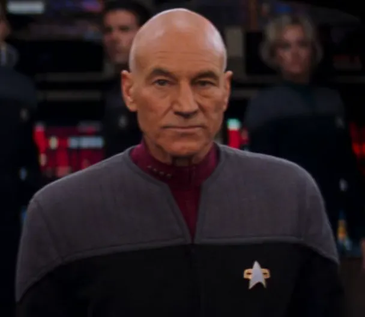
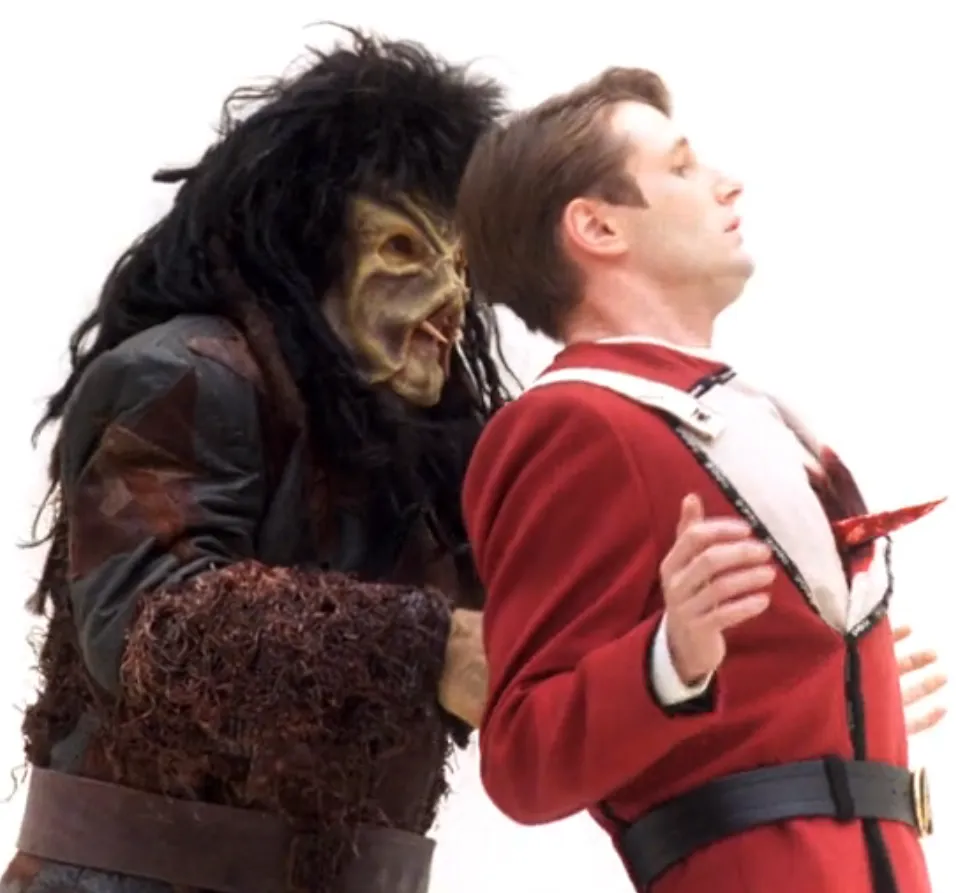
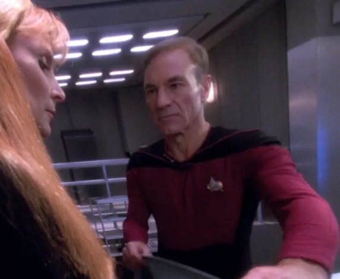
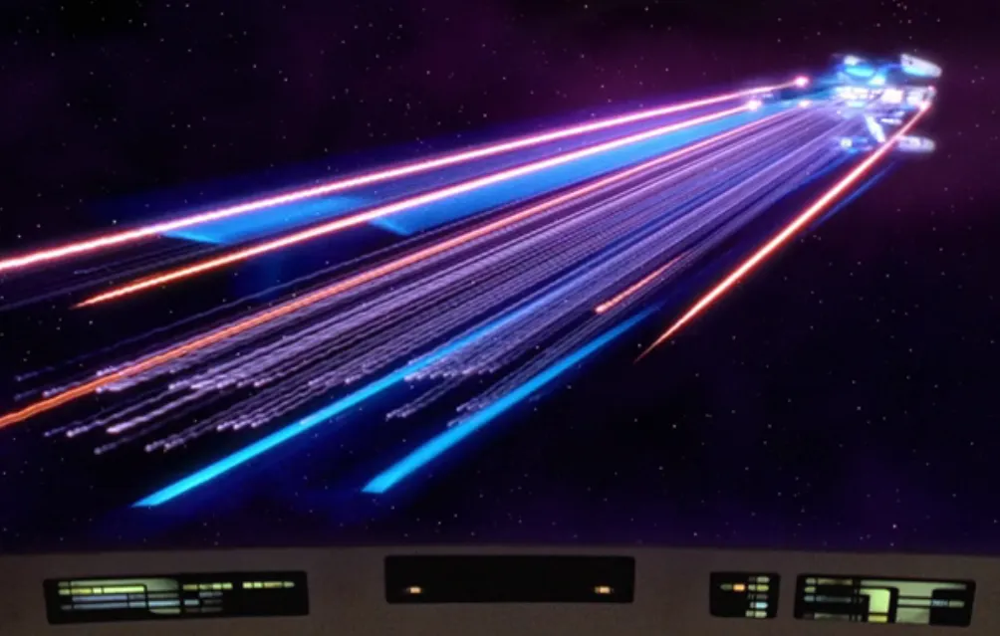
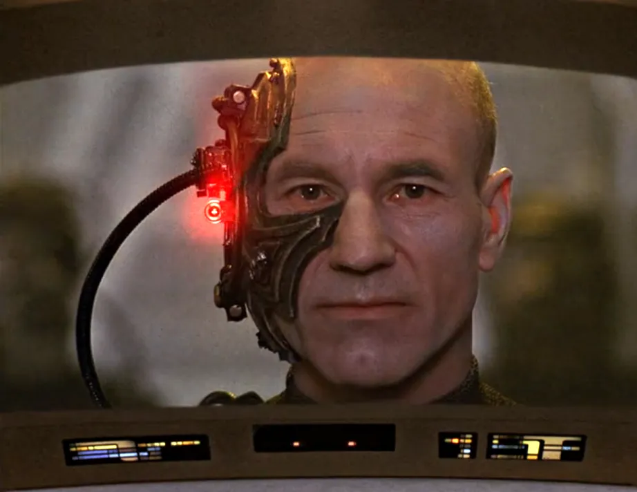
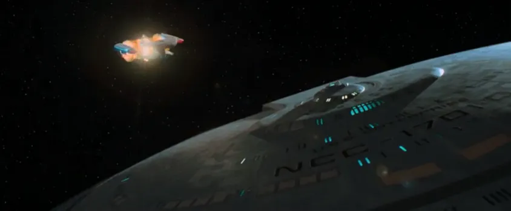
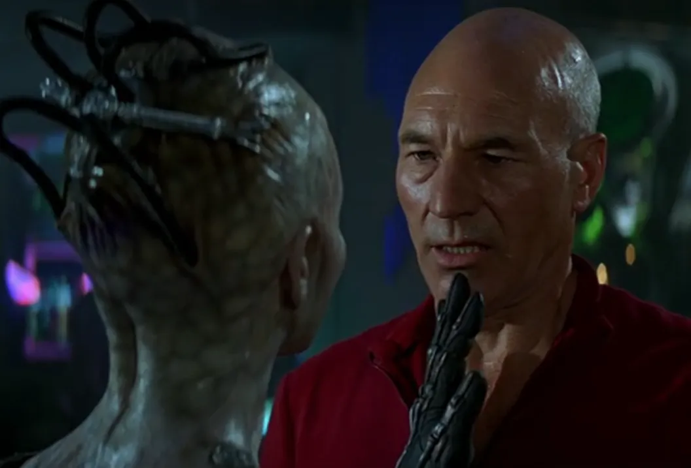
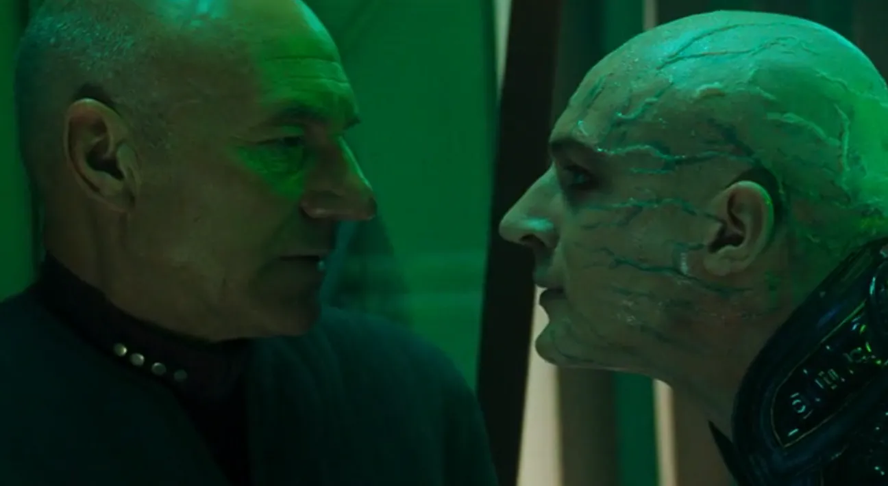
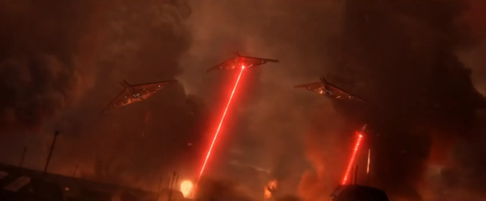
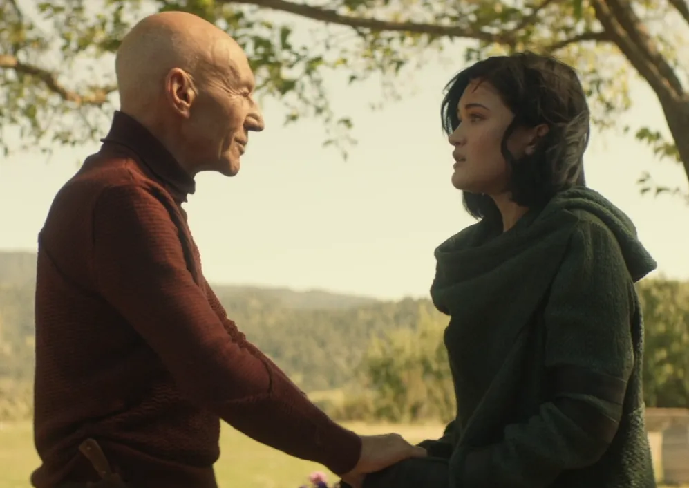

@c6reviews.
@c6reviews.| Jean-Luc Picard | |
|---|---|
 |
|
| Played by: | Patrick Stewart |
| Primary Series: |  Seasons 1-7  Seasons 1-3 |
| Primary Films: |
Star Trek Generations Star Trek: First Contact Star Trek: Insurrection Star Trek Nemesis |
| Also appears in: |
DS9 1x01/02: Emissary |
| Also played by: |
David Tristan Birkin (as a 12-year-old in TNG 6x07: Rascals)
Marcus Nash(as a 22-year-old in TNG 6x15: Tapestry)
Tom Hardy(as a cadet in Star Trek Nemesis, photograph only)
Dylan Von Halle(as a young boy in Star Trek Picard Season 2)
|
Early Life
Picard born
Jean-Luc Picard is born in La Barre, France to Yvette and Maurice Picard on July 13, 2305.
2310-2319
Picard's mother dies
Some time in the 2310s, Yvette Picard – who had a history of mental health issues – died by suicide. Jean-Luc took her death hard, believing that he was responsible by letting her out of her locked room that night.PIC 2x07: Monsters
PIC 2x09: Hide and Seek
Picard age 10
Picard is accepted to Starfleet Academy on his second try
Entrance into Starfleet Academy is competitive, and Picard later admitted to Wesley Crusher that he, too, failed to meet the requirements on his first try.
Picard age 20

Ensign Picard gets into a bar fight with Nausicaans and is gravely injured
At the age of twenty-two, fresh out of the academy, Ensign Picard was on shore leave at Starbase Earhart. When a game of dom-jot got personal, Picard and his friends engaged several Nausicaans in a brawl which led to Picard being stabbed through the heart. Picard would survive the attack and continue with an artificial heart from this day forward.TNG 6x15: Tapestry
Service on the USS Stargazer
Picard takes command of the USS Stargazer NCC‑2893
Picard was a helmsman on the Stargazer when the captain was killed and Picard assumed command. Starfleet later formerly promoted him to captain and gave him the post on a permanent basis. Picard remained in command of this vessel for twenty-two years.
Picard age 30
2335–2352
(18 years)
(18 years)

Under Picard's command, Jack R. Crusher is lost in the line of duty
Picard chose to save another life at the expense of Jack's life, and subsequently had to inform Jack's widow, Beverly Crusher. Jack and Beverly's son, Wesley, says that this was one of his earliest memories.

The “Picard Maneuver” and the abandonment of the USS Stargazer
In a battle with a Ferengi ship, Picard managed to destroy his opponents using a tactical maneuver which later became known as the “Picard Maneuver”. Though victorious, the Stargazer was seriously damaged and had to be abandoned by the crew.
Picard age 55
Service on the USS Enterprise‑D
Picard takes command of the USS Enterprise NCC‑1701‑D and meets Q
Picard is given command of Starfleet's flagship, the USS Enterprise. On his very first mission, Picard met the entity that calls itself “Q”, and represented humanity in a celestial court where Q served as judge, jury, and executioner.TNG 1x01/02: Encounter at Farpoint
Picard encounters the Borg
Picard becomes the first Starfleet captain to encounter the Borg, after Q flings the Enterprise light-years away.TNG 2x16: Q Who

Battle of Wolf 359
Picard, assimilated by the Borg and now acting under the name “Locutus”, destroys dozens of Federation ships and ends thousands of lives at Wolf 359, where Starfleet mounted its last stand against the Borg cube headed to Earth. For Picard, this traumatic event would have lasting psychological and social repercussions for many years.
TNG 3x26 & 4x01: The Best of Both Worlds
Picard meets Ambassador Spock
Picard goes undercover to Romulus, where Ambassador Spock has been reported to have fled without informing the Federation. Upon finally making contact, Picard must give Spock the unhappy news that his father, Sarek, has died.TNG 5x07 & 5x08: Unification
Picard captured by Cardassians
During a top-secret mission to Celtris III, Picard is captured and subsequently tortured – both physically and psychologically – but the Cardassian Gul Madred.TNG 6x10 & 6x11: Chain of Command
Picard is sent on a journey across time to prevent the annihilation of the human race
Picard unwittingly creates a time paradox which results in life failing to form on Earth, and thus never giving rise to humans, but Q helps Picard across time to stop this cataclysmic event.TNG 7x25/26: All Good Things...

Destruction of the Enterprise
The Enterprise embarks on a mission to stop Tolian Soran from destroying a star. A conflict with the Duras sisters during these events would lead to the destruction of the Enterprise‑D.Star Trek Generations

First Contact
Picard takes the Enterprise‑E back in time to Earth's first contact with an alien species in order to stop the Borg from assimilating humanity. Picard must face his greatest fear: The Borg Queen.Star Trek: First Contact
Mission to the Briar Patch
Picard leads the Enterprise crew on their mission to investigate what was happening among the Son'a and Ba'ku in the region of space known as the Briar Patch.Star Trek: Insurrection

Picard vs. Shinzon
The Enterprise is called to Romulus to meet the new Praetor, a young clone of Jean-Luc Picard named Shinzon.Star Trek Nemesis
Picard age 75
Picard promoted to Admiral
(Although the year 2381 is not confirmed as the year Picard was promoted, there is a decent amount of evidence pointing to this year.)

Rogue Synth attack on Mars; Picard resigns from Starfleet
On April 5, First Contact Day, a group of compromised synthetic lifeforms launched an attack on Mars, killing over 90,000 people. In the aftermath, the Federation banned all synthetic lifeforms and put a halt to all research into androids. The devastation led to Starfleet scaling back its evacuation operations of Romulus prior to its star's impending supernova. Now-admiral Picard objected, believing that Starfleet had a duty to help the Romulans, and that it was the humane thing to do. Picard gave Starfleet an ultimatum: accept his new rescue plan or accept his resignation. Starfleet chose the latter, and Picard slipped quietly into retirement.
Picard age 90

Picard comes out of retirement to help a young android woman named Dahj
Picard embarks on a quest to find Dahj's creator, a cyberneticist named Bruce Maddox, and to uncover why a shadowy sect of the Romulan secret police are hellbent on her destruction.Star Trek: Picard Season 1
Q alters history; Picard goes to the past to repair the timeline
Picard confronts a traumatic childhood memory while he races to fix a timeline broken by Q's meddling.Star Trek: Picard Season 2
Picard reunites with his crew
The crew of the USS Enterprise reunites when Beverly Crusher is being pursued by the eccentric Captain Vadic and a conspiracy at the Daystrom Institute is uncovered by Worf.Star Trek: Picard Season 3